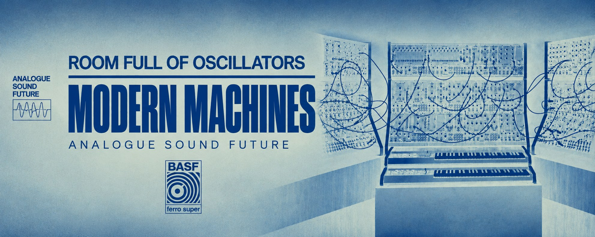

← Back to RFO
A 16-track tracker with MIDI support, transformers and sample tools.
A 16-track parameter-lock drum synthesizer and step sequencer, inspired by the Elektron Machinedrum.
A research launcher for independent search engines, archives, primary sources and link cleaning.